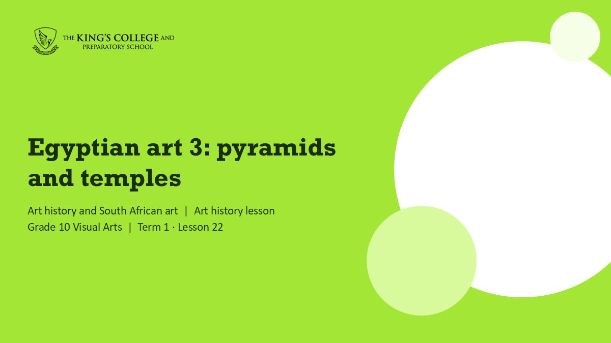

Term 1 · Lesson 22 · Art history lesson
Egyptian Art 3: Pyramids and Temples
Start Here
Today I Will
- Describe how the pyramids developed from the mastaba
- Label the parts of an Egyptian temple plan
- Explain how architecture makes the pharaoh look powerful
The Great Pyramid was the tallest building on earth for nearly 4 000 years. Why would a ruler spend so much on a tomb?
Words to Know
| Word | Meaning |
|---|---|
| Pyramid | A massive tomb with a square base and four sloping triangular sides meeting at a point. |
| Mastaba | A flat-topped, rectangular Egyptian tomb with sloping sides, used before the pyramids. |
| Pylon | The massive sloping gateway at the entrance of an Egyptian temple. |
| Hypostyle hall | A large hall with a roof held up by many columns. |
| Axis | An imaginary straight line through the centre of a building that the plan is arranged along. |
Slides

Videos
Notes
The pyramids at Giza and temple design (Karnak, Abu Simbel): engineering, symbolism and power.
From Mastaba to Pyramid
- Mastaba: Early kings and nobles were buried under flat-topped, rectangular tombs of mud brick or stone.
- Step pyramid: Imhotep designed King Djoser's tomb at Saqqara (c. 2650 BCE) by stacking mastabas of decreasing size.
- True pyramid: Within about a century builders made smooth sides. Giza: Khufu, Khafre and Menkaure, c. 2550–2490 BCE.
- Meaning: The shape may stand for the sun's rays or the first mound of land from which Egyptians believed life arose.
- Power: Thousands of workers, millions of blocks and precise alignment to the compass points showed a ruler who could order the world.
The Temple: A Journey from Light to Dark
- Pylon: Huge sloping gateway, often carved with the pharaoh defeating enemies. It announces power before you enter.
- Open courtyard: A bright, open space where more people could gather on festival days.
- Hypostyle hall: A forest of massive columns. At Karnak the hall has 134 columns, carved to look like papyrus plants.
- Sanctuary: A small, dark room at the end of the axis that held the god's statue. Only priests and the pharaoh could enter.
- Along the axis: Moving inwards, the floor rises, the roof drops and the light fades, so the spaces feel ever more sacred.
- Abu Simbel (Ramesses II): Cut into a cliff, with four seated colossal statues of the king at the entrance. In the 1960s it was moved to save it from a dam lake.
Pyramids and temples turned belief and power into stone: the bigger, darker and more ordered, the more sacred.

The pharaohs filled their tombs with treasure for the afterlife. Jesus taught that we should store up treasure in heaven, not on earth. What do you think lasts longer than stone?
Practical
You need: Printed temple plan, History booklet, visual journal
Label a Temple Plan and Analyse Its Power
- Stick the temple plan into your VJ.
- Label the pylon, courtyard, hypostyle hall, sanctuary and the axis.
- Shade the plan from light (entrance) to dark (sanctuary) to show how the light changes.
- Choose either the pyramids at Giza or Abu Simbel to analyse.
- Use the FET formula for scale and for balance: identify, describe, effect.
- Write three sentences: how does the design make the pharaoh look powerful?
Test Yourself
- Name the four main parts of an Egyptian temple in the order a visitor passes through them.
- Who designed the step pyramid of Djoser, and how was it built?
- Explain two ways in which Egyptian architecture expresses the power of the pharaoh.
Show answers
1. Pylon, open courtyard, hypostyle hall, sanctuary. 2. Imhotep; by stacking mastabas of decreasing size on top of each other. 3. Any two, explained: huge scale; symmetry and order; lasting stone; colossal statues of the king (Abu Simbel); reliefs on the pylon showing victory; a plan that leads only the pharaoh and priests to the sacred centre.
Finished Early?
Draw the development of the Egyptian tomb in three steps.
- Draw three small side views in a row: a mastaba, a step pyramid and a true pyramid.
- Label each one, and add 'Imhotep, Djoser, Saqqara' under the step pyramid.
- Add a tiny stick figure beside the true pyramid to show its scale.
- Write one sentence on how the pyramid's size showed the pharaoh's power.